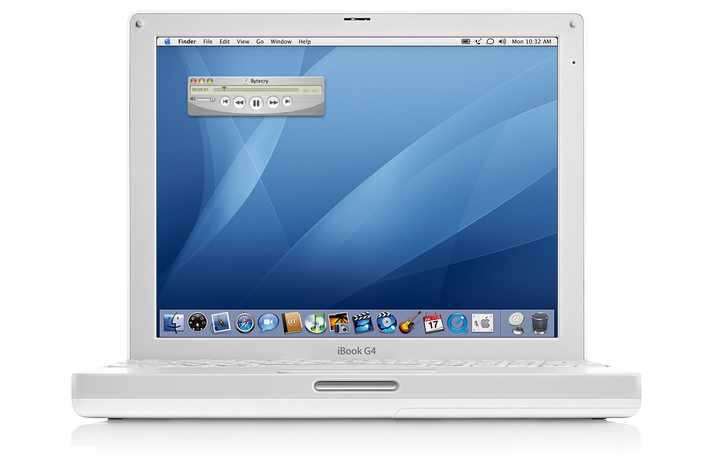

QuickTime Player was a media playback application on Mac OS X for playing video, listening to audio files, and experiencing VR. QuickTune on the other hand, is a “mini player” for Apple Music on macOS with the look and feel of QuickTime. It brings all of QuickTime’s brushed metal textures, glassy buttons, and its utilitarian LCD display to modern macOS.
QuickTune was developed in Beaverton, Oregon in collaboration with Tuomas Hämäläinen in Copenhagen, Denmark.
QuickTime Player was a media playback application on Mac OS X for playing video, listening to audio files, and experiencing VR. QuickTune on the other hand, is a “mini player” for Apple Music on macOS with the look and feel of QuickTime. It brings all of QuickTime’s brushed metal textures, glassy buttons, and its utilitarian LCD display to modern macOS.
QuickTune was developed in Beaverton, Oregon in collaboration with Tuomas Hämäläinen in Copenhagen, Denmark.
Resize the QuickTune window to expand or collapse the Now Playing track’s artwork. When expanded, the window will always persist the correct aspect ratio.
From brushed metal to the glass buttons to the classic LCD, QuickTune 7 faithfully replicates the look and feel of QuickTime 7. Graphite theme comes standard.
Open the available Inspector HUD to get additional details of the Now Playing track such as Genre, Year, Composers, and much more.
With QuickTune, you don’t have to bring up Apple Music to switch playlists. Simply open the available Playlists HUD and double-click a playlist start.

Looking for Music Widget?
Music Widget is a replica of the original iTunes Widget included with Dashboard introduced in 2005.
Learn more about Music Widget
Looking for Music MiniPlayer?
Music MiniPlayer is a replica of the original iTunes MiniPlayer included with early versions of iTunes.
Learn more about Music MiniPlayer
| Software | macOS Big Sur and newer; Music.app |
|---|---|
| Hardware | Universal Binary for Macintosh computers with Apple silicon and Intel processors |
| Language | English, Spanish, Italian, Finnish, German, and Polish |
| Code | 100% Native. Written in Swift using AppKit. |
QuickTune uses Scripting Bridge and Distributed Notification Center to send and receive commands with Apple Music on macOS. The majority of the UI is written in Core Graphics and Core Animation to achieve crisp UI that is also optimized for non-Retina Displays. QuickTune is a completely native app; written with Swift and AppKit.
THE SOFTWARE IS PROVIDED "AS IS", WITHOUT WARRANTY OF ANY KIND, EXPRESS OR IMPLIED, INCLUDING BUT NOT LIMITED TO THE WARRANTIES OF MERCHANTABILITY, FITNESS FOR A PARTICULAR PURPOSE AND NONINFRINGEMENT. IN NO EVENT SHALL THE AUTHORS OR COPYRIGHT HOLDERS BE LIABLE FOR ANY CLAIM, DAMAGES OR OTHER LIABILITY, WHETHER IN AN ACTION OF CONTRACT, TORT OR OTHERWISE, ARISING FROM, OUT OF OR IN CONNECTION WITH THE SOFTWARE OR THE USE OR OTHER DEALINGS IN THE SOFTWARE.